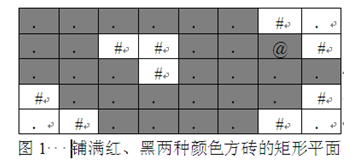

广度优先搜索BFS（Breadth First Search）也称为宽度优先搜索，它是一种先生成的结点先扩展的策略。
在广度优先搜索算法中，解答树上结点的扩展是按它们在树中的层次进行的。首先生成第一层结点，同时检查目标结点是否在所生成的结点中，如果不在，则将所有的第一层结点逐一扩展，得到第二层结点，并检查第二层结点是否包含目标结点，……，对层次为n+1的任一结点进行扩展之前，必须先考虑层次完层次为n的结点的每种可能的状态。因此，对于同一层结点来说，求解问题的价值是相同的，可以按任意顺序来扩展它们。通常采用的原则是先生成的结点先扩展。
为了便于进行搜索，要设置一个表存储所有的结点。由于在广度优先搜索算法中，要满足先生成的结点先扩展的原则，所以存储结点的表一般采用队列这种数据结构。
在编写程序时，可用数组q模拟队列。front和rear分别表示队头指针和队尾指针，初始时front=rear=0。
元素x入队操作为 q[rear++]=x;
元素x出队操作为 x =q[front++];
广度优先搜索算法的搜索步骤一般是：
（1）从队列头取出一个结点，检查它按照扩展规则是否能够扩展，如果能则产生一个新结点。
（2）检查新生成的结点，看它是否已在队列中存在，如果新结点已经在队列中出现过，就放弃这个结点，然后回到第（1）步。否则，如果新结点未曾在队列中出现过，则将它加入到队列尾。
（3）检查新结点是否目标结点。如果新结点是目标结点，则搜索成功，程序结束；若新结点不是目标结点，则回到第（1）步，再从队列头取出结点进行扩展。
最终可能产生两种结果：找到目标结点，或扩展完所有结点而没有找到目标结点。
如果目标结点存在于解答树的有限层上，广度优先搜索算法一定能保证找到一条通向它的最佳路径，因此广度优先搜索算法特别适用于只需求出最优解的问题。当问题需要给出解的路径，则要保存每个结点的来源，也就是它是从哪一个节点扩展来的。
对于广度优先搜索算法来说，问题不同则状态结点的结构和结点扩展规则是不同的，但搜索的策略是相同的。广度优先搜索算法的框架一般如下：
void BFS（）
{
队列初始化；
初始结点入队；
while （队列非空）
{
队头元素出队，赋给current；
while （current 还可以扩展）
{
由结点current扩展出新结点new；
if （new 重复于已有的结点状态） continue;
new结点入队；
if (new结点是目标状态)
{
置flag= true; break;
}
}
}
}
对于不同的问题，用广度优先搜索法的算法基本上都是一样的。但表示问题状态的结点数据结构、新结点是否为目标结点和是否为重复结点的判断等方面则有所不同。对具体的问题需要进行具体分析，这些函数要根据具体问题进行编写。
【例1】黑色方块
有一个宽为W、高为H的矩形平面，用黑色和红色两种颜色的方砖铺满。一个小朋友站在一块黑色方块上开始移动，规定移动方向有上、下、左、右四种，且只能在黑色方块上移动（即不能移到红色方块上）。编写一个程序，计算小朋友从起点出发可到达的所有黑色方砖的块数（包括起点）。
例如，如图1所示的矩形平面中，“#”表示红色砖块，“．”表示黑色砖块，“@”表示小朋友的起点，则小朋友能走到的黑色方砖有28块。

（1）编程思路。
采用广度优先搜索法解决这个问题。
用数组q模拟队列操作，front为队头指针，rear为队尾指针，初始时front=rear=0。
入队操作为 q[rear++]=cur;
出队操作为 cur=q[front++]。
程序中定义方砖的位置坐标（x,y）为Node类型，定义数组int visit[N][N]标记某方砖是否已走过，visit[i][j]=0表示坐标（i,j）处的方砖未走过，visit[i][j]=1表示坐标（i,j）处的方砖已走过。初始时visit数组的所有元素值均为0。
具体算法步骤为：
① 将出发点（startx，starty）入队列q，且置visit[startx][starty]=1，表示该处的方砖已被处理，以后不再重复搜索。
② 将队列q的队头元素出栈，得到一个当前方砖cur，黑色方砖计数（sum++），沿其上、下、左、右四个方向上搜索未走过的黑色方砖，将找到的黑色方砖的坐标入队列q。
③ 重复执行②，直至队列q为空，则求出了所有能走过的黑色方砖数。
（2）源程序。
#include <iostream>
using namespace std;
#define N 21
struct Node
{
int x;
int y;
};
int dx[4]={-1,1,0,0};
int dy[4]={0,0,-1,1};
char map[N][N];
int visit[N][N];
int bfs(int startx, int starty,int w,int h)
{
Node q[N*N],cur,next; // q为队列
int front,rear; // front为队头指针，rear为队尾指针
int i,x,y,sum;
front=rear=0; // 队列q初始化
sum=0;
cur.x=startx; cur.y=starty;
visit[startx][starty]=1;
q[rear++]=cur; // 初始结点入队
while(rear!=front) // 队列不为空
{
cur=q[front++]; // 队头元素出队
sum++; // 方砖计数
for (i=0;i<4;i++)
{
x=cur.x+dx[i]; y=cur.y+dy[i];
if(x >=0 && x<h && y>=0 && y<w && map[x][y]!='#' && visit[x][y]==0)
{
visit[x][y] = 1;
next.x=x; next.y=y; // 由cur扩展出新结点next
q[rear++]=next; // next结点入队
}
}
}
return sum;
}
int main()
{
int i,j,pos_x,pos_y,w,h,sum;
while(1)
{
cin>>w>>h;
if (w==0 && h==0) break;
for(i=0;i<h;i++)
{
for(j=0;j<w;j++)
{
cin>>map[i][j];
if (map[i][j]=='@')
{
pos_x = i;
pos_y = j;
}
visit[i][j] = 0;
}
}
sum=bfs(pos_x, pos_y,w,h);
cout<<sum<<endl;
}
return 0;
}